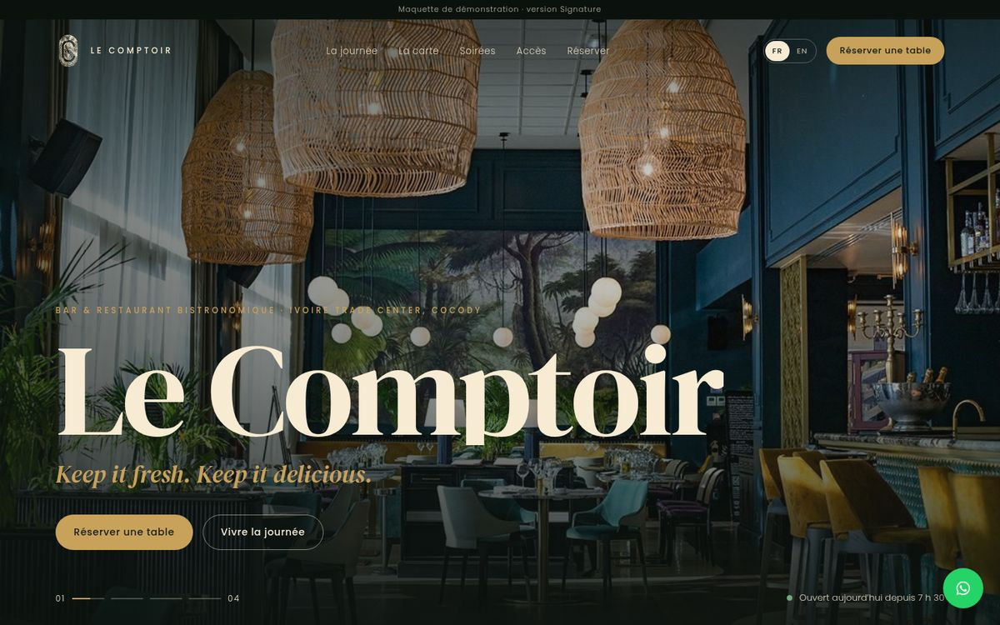
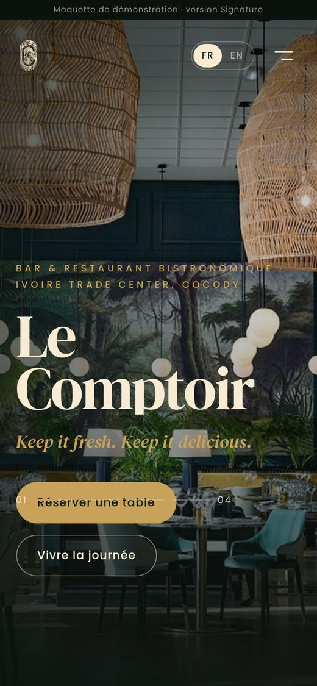
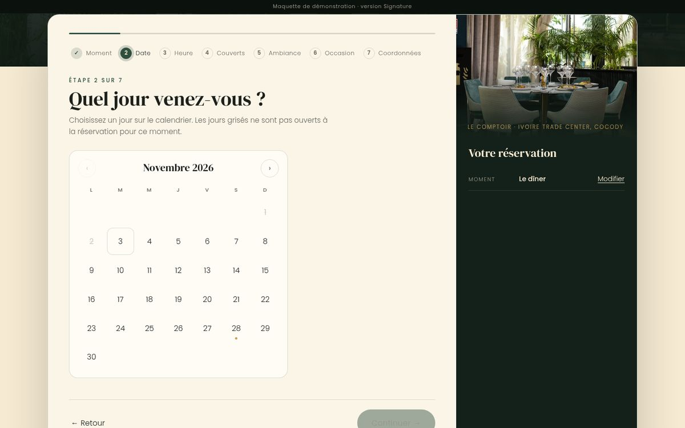
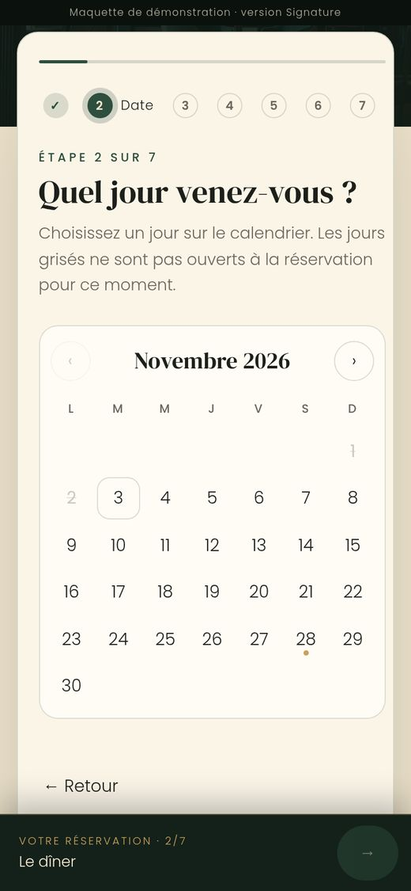

Version A
Signature
Éditoriale et cinématographique : le site se lit comme un magazine, et suit une journée au Comptoir, du premier café à la nuit.
- Grand diaporama d'accueil, typographie serif affirmée
- Défilement narratif : l'horloge avance et la page passe du jour à la nuit
- Carte en index animé, soirée mise en scène, plan de l'ITC


La page de réservation, sur ordinateur et sur téléphone